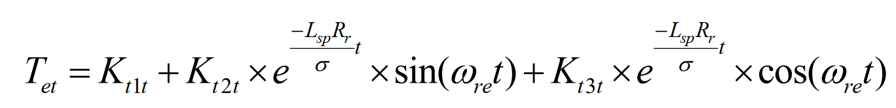
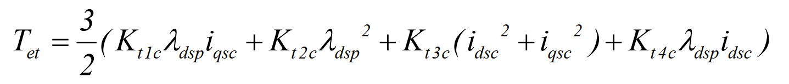

Brushless Doubly Fed Induction Machine (BDFIM) for Wind Turbin Applications
Compared to DFIMs (Doubly-Fed Induction Machines), the dynamic and steady-state behavior of the BDFIM (Brushless Doubly-Fed Induction Machine) is more complicated. This fact is due to the coexistence of the undesirable asynchronous torques (disturbance torques) with the expected synchronous torque. In this paper, first, an analytical relationship between CM (Control Machine) currents, regarded as the system’s input, and the total output torque, regarded as the system’s output is derived. The relationship is expressed in both frequency and time domains to have a more clear vision of the BDFIM dynamic behavior. In the introduced equations, all types of torques that coexist in the BDFIM are considered.

Brushless Doubly Fed Induction Machine (BDFIM) - Derived Equations
 